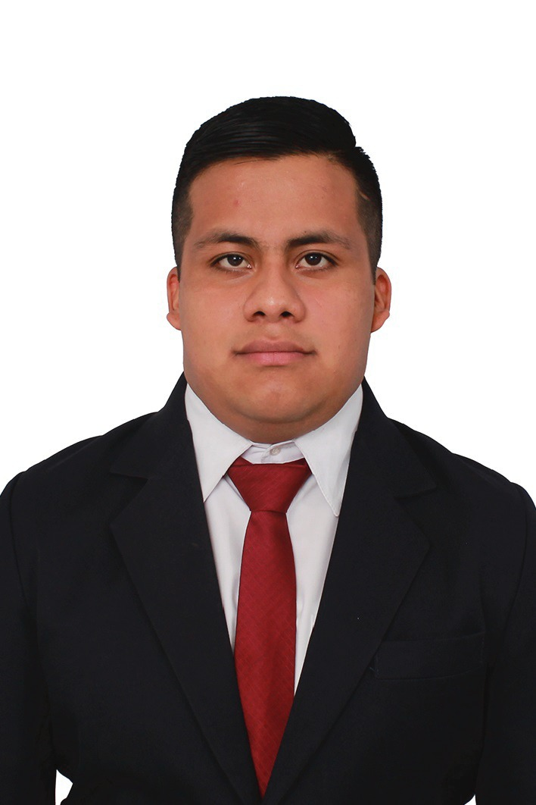
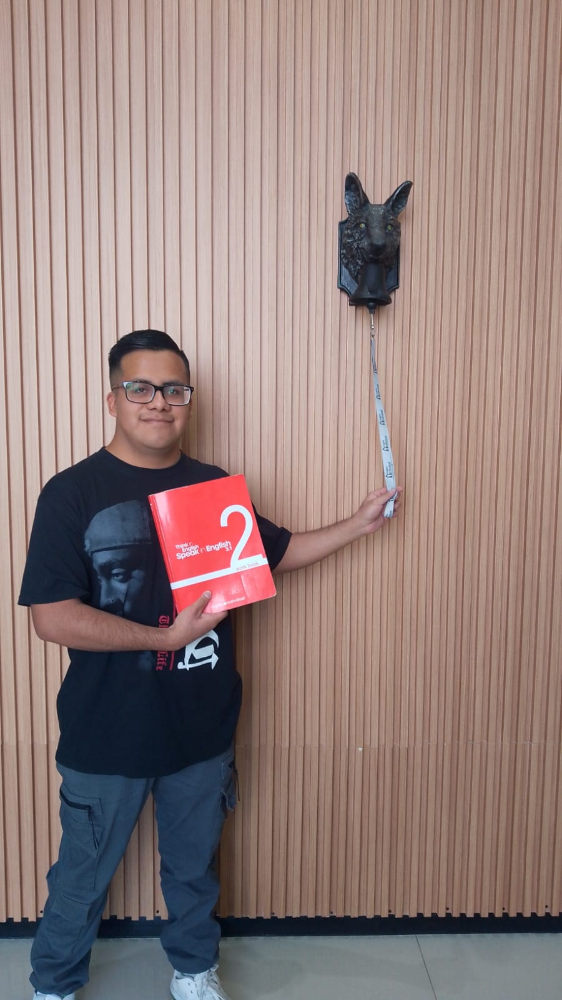
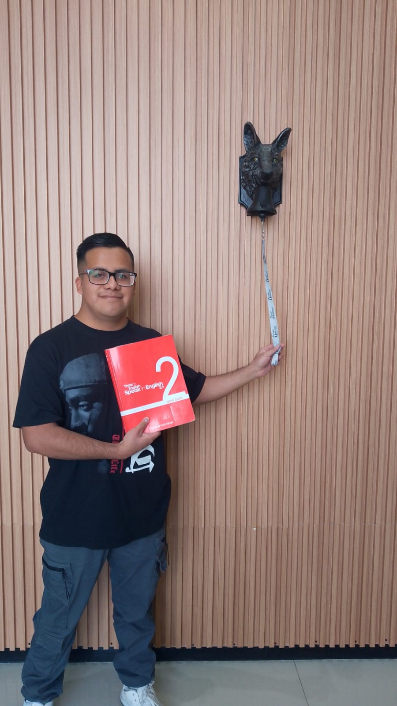

Desarrollo y Gestión de Software
Daniel de Jesus Ambrocio Reyes

 

Bienvenido a mi portafolio
Mi nombre es Daniel de Jesus Ambrocio Reyes
Soy Ingeniero en Desarrollo y Gestión de Software, con un año de experiencia en el desarrollo de software y dominio del idioma inglés a nivel intermedio. He participado en todas las etapas del ciclo de vida de desarrollo de proyectos, abarcando el análisis, diseño, programación y pruebas. Cuento con experiencia en trabajo colaborativo, destacándome especialmente en el área de back-end. A continuación, se presentan los lenguajes de programación que manejo:
| Lenguaje de Programación | Nivel |
|---|---|
| C# | Medio |
| React (Vite) | Medio |
| PHP | Medio |
| JavaScript | Medio |
| Python | Básico |
| SQL | Medio |
| MongoDB | Medio |
Educación ▼
Universidad Tecnológica de Puebla
Ingeniería en Desarrollo y Gestión de Software
2022 - 2024
Universidad Tecnológica de Puebla
Técnico SuperiorUniversitario en Desarrollo de Software Multiplataforma
2020 - 2022
Experiencia ▼
Practicante - MBQ Group Bussiness Solution S.A de C.V
Enero - Abril del 2024
Practicante - Universidad Tecnológica de Puebla
Mayo - Agosto del 2022